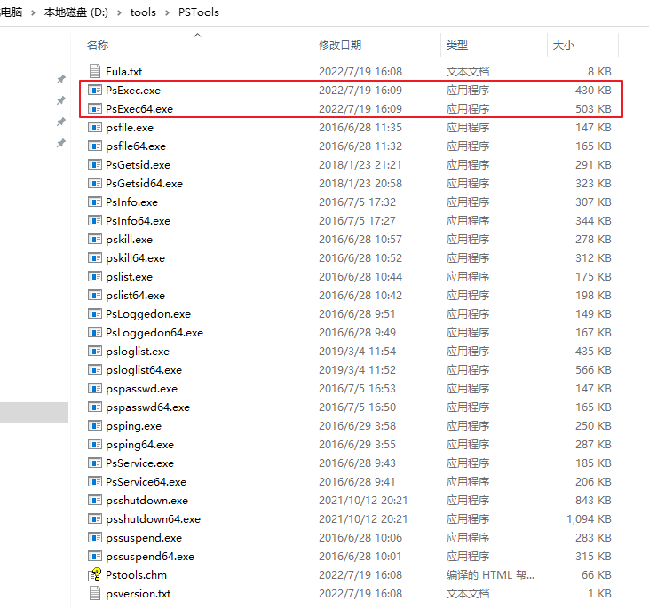

在自动化测试或者自动化工具开发中，通常需要向其它电脑或者服务器发送指令，比如Windows发送命令到Linux服务器开启某个服务进程，或者读取状态信息，我们可以使用ssh协议实现。
如果Windows主机需要发送命令到局域网内的其它Windows电脑要如何实现呢？在网络安全中称为横向移动的内网渗透方法可实现远程执行命令，横向移动工具有很多，本文介绍psexec和wmiexec这两个工具如何实现远程执行进程。
PsExec
PsExec是 Windows 资源工具包PsTools中提供的一个远程执行进程的工具，使用服务控制管理器（SCM）远程启动一个服务，并通过服务进程进行远程管理。可用于在其他windows系统上执行进程，并提供交互式控制。
我使用PsExec没有成功启动远程电脑进程，推荐使用后面介绍的psexec.py脚本。
PsTools下载地址：https://learn.microsoft.com/zh-cn/sysinternals/downloads/psexec

使用前需要先退出目标电脑的杀毒软件，并关闭防火墙。
命令格式：
1 | $ psexec \\hostIp -u [username] -p [password] cmd |
psexec.py
psexec.py是 Python impacket 包提供的远程执行脚本。
安装命令：
1 | $ python3 -m pip install impacket |
安装完成后，可在python安装路径下的Scripts目录中找到psexec.py脚本。
命令格式：
1 | Python psexec.py <username>:"<password>"@<IP address> cmd |
示例：
1、进⼊半交互式shell
1 | python psexec.py Administrator:admin@192.168.0.93 |
2、执行脚本
编写一个Python脚本demo.py：
1 | print("hello world") |
放到远程电脑的D盘根目录下，然后在本地电脑打开cmd窗口执行:python psexec.py Administrator:admin@192.168.0.93 "python D:/demo.py"
1 | python psexec.py Administrator:admin@192.168.0.93 "python D:/demo.py" |
其它示例：
1 | # 获取远程电脑主机名 |
3、使用Pythonsubprocess库来读取进程返回结果
1 | import subprocess |
wmiexec.py
Wmiexec也是一种横向移动工具，它利用了Windows Management Instrumentation (WMI) 接口来远程管理Windows系统。WMI是一个Windows操作系统提供的系统管理工具，它提供了一套API接口，可以对本地和远程Windows系统进行管理。如查看进程列表、执行命令、上传和下载文件等。
在使用Wmiexec之前，需要先在目标Windows系统上启用WMI服务，并且确保防火墙不会阻止WMI的通信。
wmiexec.py也来自于impacket工具包，支持的参数可执行 python wmiexec.py 命令查看，下面介绍几种用法。
1、进⼊半交互式shell
1 | $ python wmiexec.py Administrator:admin@192.168.0.93 |
2、执行脚本
1 | $ python wmiexec.py Administrator:admin@192.168.168.93 "python D:/demo.py" |
Psexec和Wmiexec之间的差异
以下内容采用ChatGPT生成：
Wmiexec和Psexec是用于在Windows系统上执行命令和脚本的工具，它们各自的特点如下：
Wmiexec的特点：
- 使用WMI接口远程连接到Windows系统，可以执行更高级别的管理操作，如注册表操作和事件订阅等。
- 可以编写自定义WMI脚本来扩展其功能。
- 使用WMI接口时，对防火墙没有太大的依赖。
Psexec的特点：
- 使用服务控制管理器（SCM）远程启动一个服务，并通过服务进程进行远程管理。
- 支持Windows NT及以上版本的操作系统。
- 执行速度较快，比Wmiexec更快。
- 可以隐藏服务进程的图标和窗口。
总的来说，Wmiexec适用于基于WMI的管理和远程控制，可以进行更高级别的操作，但执行速度较慢。Psexec则适合用于执行命令和脚本等任务，执行速度快，但不能进行高级别的操作。选择哪种工具取决于具体的使用场景和需求。
参考文档
- impacket包：https://github.com/fortra/impacket
- PsTools下载地址：https://learn.microsoft.com/zh-cn/sysinternals/downloads/psexec
- PowerShell远程: https://www.anyviewer.com/how-to/remotely-run-programs-on-another-computer-2578.html
本文标题:Windows远程执行进程工具psexec和wmiexec介绍
文章作者:hiyo
文章链接:https://hiyongz.github.io/posts/windows-lateral-movement-tool-psexec-and-wmiexec/
许可协议:本博客文章除特别声明外，均采用CC BY-NC-ND 4.0 许可协议。转载请保留原文链接及作者。